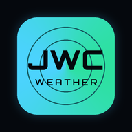

NO CONNECTION
JERSEY WEATHER CHAT
The weather here is always live, so it needs an internet connection. As soon as you're back online this page will reload by itself.
In a storm, check gov.je/weather and Jersey Met for warnings when you can — and in an emergency call 999.